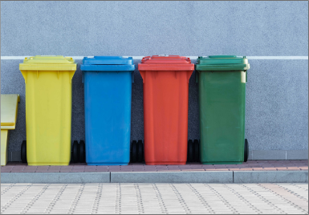
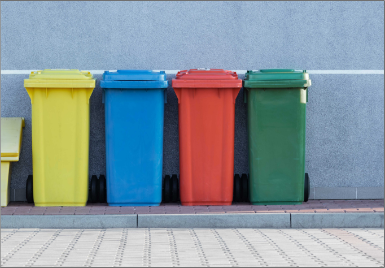

Acamar

 

Quem somos
A Associação dos Catadores de Materiais Recicláveis de lavras -ACAMAR é uma associação sem fins lucrativos,fundada em 1998.
Missão
Contribuir com a preservação ambiental e garantir a renda de nossos associados.
Nosso Trabalho
Trabalhamos com coleta seletiva no município de lavras,atuando em parceria com a prefeitura e da populaçao lavrense.Coletamos,em média,150 toneladas de materiais reciclaveis por mês e precisamos da sua ajuda para crescer!
Como eu posso ajudar
>separe o material reciclável e deixe na porta de sua casa nodia da coleta.Não sabe o dia da coleta em seu bairro? clique aqui!
>Traga seu material reciclável até nossa sede ou deixe em um dos pontos de coletas voluntárias.
>Colabore com doações para a aquisição de materiais e equipamentos para garantir a continuidade dos nossos trabalhos.
>Divulgue nosso projeto! Fale com seus amigos ,vizinhos e compartilhe nossas publicações nas redes sociais.